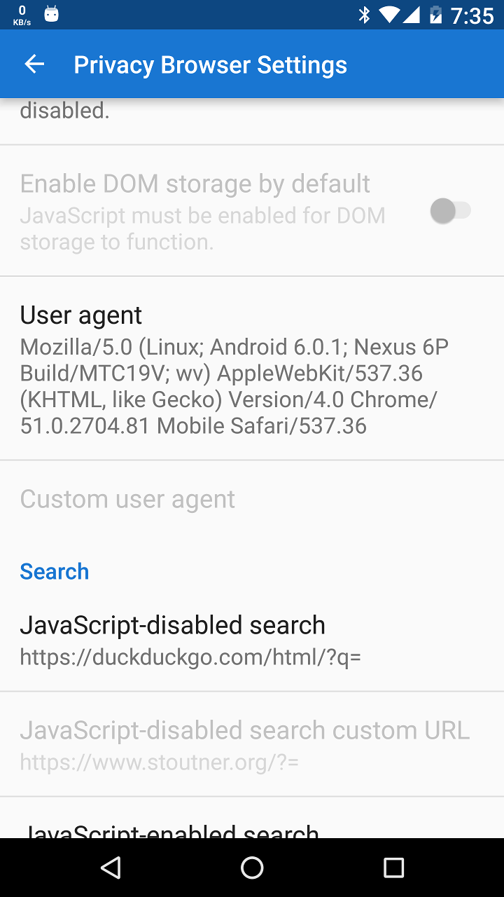
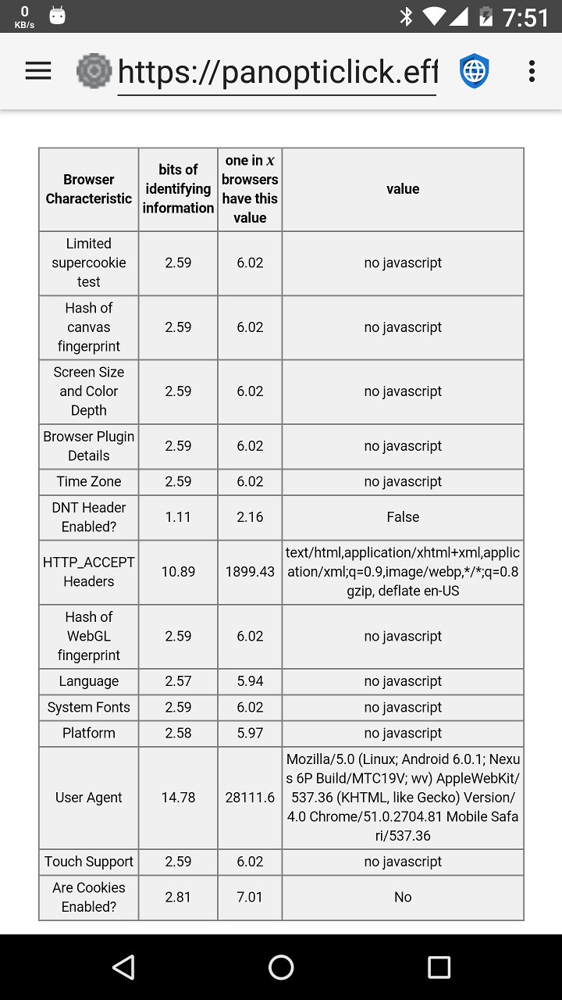

When web browsers connect to websites, they send a user agent, which identifies the browser and the rendering capabilities it possesses. They website can use this information to decide which version of the website to send to the browser. For example, many websites have different versions for desktop and mobile browsers.
By default, Privacy Browser uses the built-in user agent that comes with the WebView installed on the device. You can see what it is by going to the Settings screen and setting the User agent to WebView Default. The screenshot below shows a Nexus 6P running Android 6.0.1 with Android System WebView 51.0.2704.81 installed.
There is enough information in the user agent that someitmes only a few visitors to a website will be the same. If the user agent is combined with another piece of non-unique identifying information, often it results in a unique fingerprint. The Electronic Frontier Foundation created a tool called Panopticlick to demonstrate how much information can be gleaned from these sources. If this test is run with JavaScript enabled the amount of information that is disclosed increases greatly.
Privacy Browser allows you to change the user agent. There are several preset options that match common browsers and operating systems. Privacy Browser also has its own user agent, which is simply PrivacyBrowser/1.0. For tracking purposes, anything that is rare is easier to track. If Privacy Browser becomes common and many people use PrivacyBrowser/1.0 as their user agent, it will be a good choice for privacy. For now, choosing something that has lots of hits on a web server, like Edge 13 on Windows 10, allows the device to blend in with the crowd. Firefox or Chrome provide less privacy because they auto-update and their version numbers change so quickly that it is likely the user agents included in Privacy Browser will often be out of step with the majority of user agents in the server logs.
A second reason to change the user agent is to convince the web server to send the desktop version of the web page, which often works better on modern smart phones than the mobile version. For this purpose, PrivacyBrowser/1.0 works well, because web servers typically default to the desktop version unless they recognize a phone browser agent.
Android's WebView does not allow the user agent to be blank. If it is, WebView simply sends the default user-agent to the server.